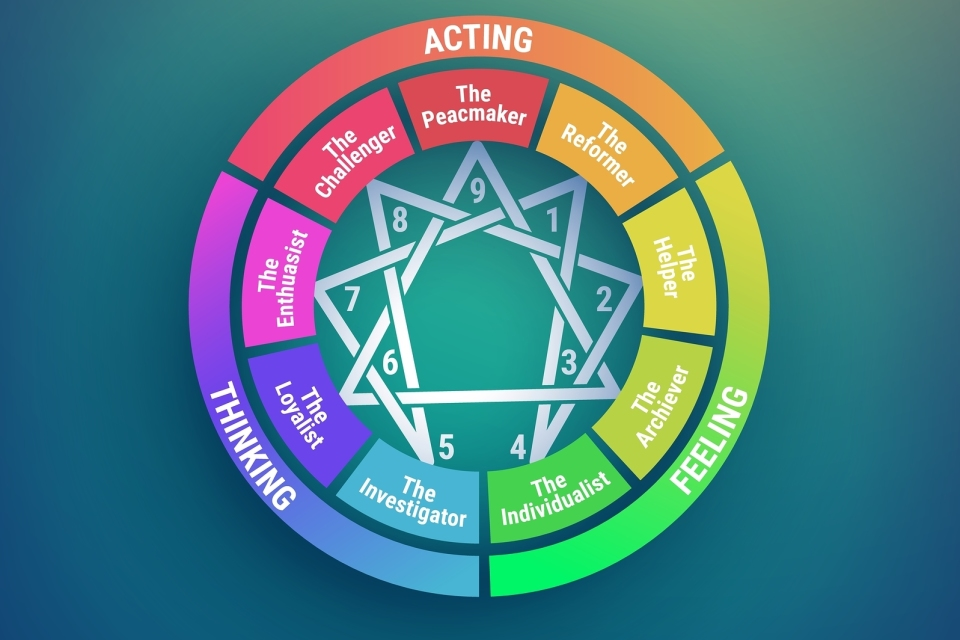
Discover your personality type and unlock deeper self-awareness
Click on any section of the circle to learn more
Explore the 9 TypesTypes 8, 9, 1
The Body Center, also known as the Instinctual Center, includes Enneagram Types 8, 9, and 1. People in this group rely on their instincts or gut feelings when making decisions. They often respond quickly based on what feels right to them rather than overthinking.
These types are focused on action, personal security, control, and belonging. They want to feel safe in their environment and try to do what they believe is the right and fair thing. Their instincts help guide their actions and responses to situations around them.
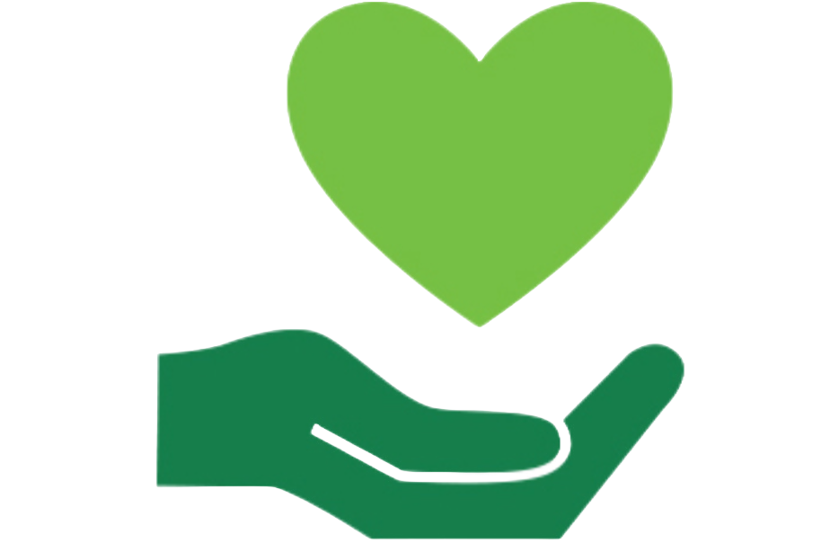
Types 2, 3, 4
The Heart Center, also known as the Emotional Center, includes Enneagram Types 2, 3, and 4. People in this group rely on their feelings and emotions to understand the world and connect with others.
They focus on relationships, love, approval, and recognition. These types often try to create a positive self-image and want to feel appreciated and valued by the people around them.
Types 5, 6, 7
The Head Center, also called the Intellectual Center, includes Enneagram Types 5, 6, and 7. People in this group mainly rely on thinking and analyzing before making decisions. They like to gather information, understand situations, and plan carefully.
Their focus is on creating certainty and safety. They often think about possible outcomes and different options before taking action, which helps them feel more prepared and secure.
Click the arrows to scroll through each type.
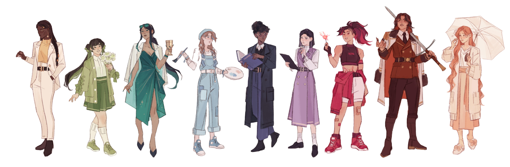
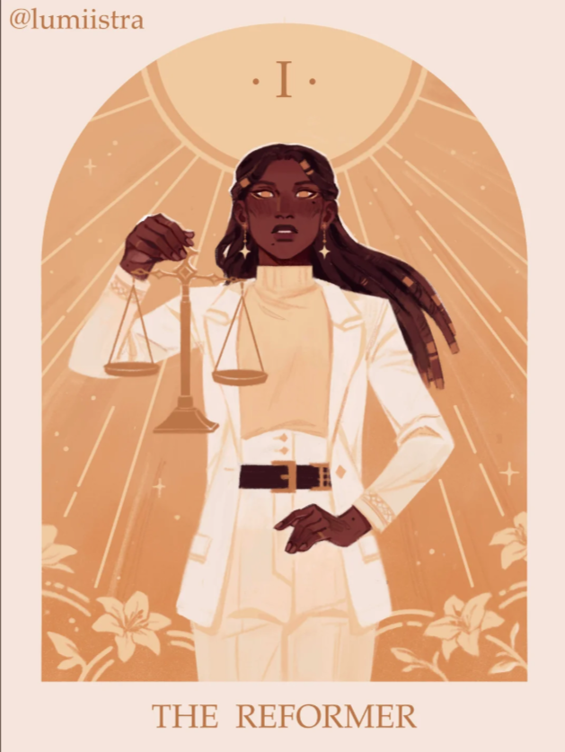
Principled · Purposeful · Self-Controlled · Perfectionistic
Enneagram Type One, often referred to as "The Reformer" or "The Perfectionist." Driven by a deep seated fear of being corrupt or defective, these individuals strive for a life of absolute integrity and moral consistency. They are honest, hard workers who always try to do the right thing. Because they want everything to be perfect, they can sometimes be a bit strict or bossy. Basically, they just have high standards and a strong heart for being good people.
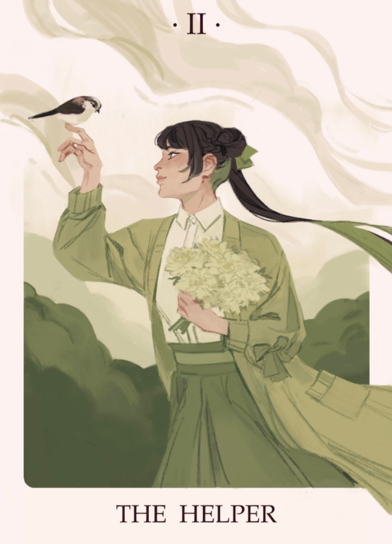
Generous · Demonstrative · People-Pleasing · Possessive
Enneagram Type Two, often called "The Helper." These are some of the most genuine and caring people you'll meet, always ready to listen and give their all to a relationship. They have a huge heart and a strong desire to be loved, but because they focus so much on making others happy, they often forget to take care of themselves. While their generosity is amazing, they can sometimes come across as a bit needy because they put so much energy into staying connected with the people they love.
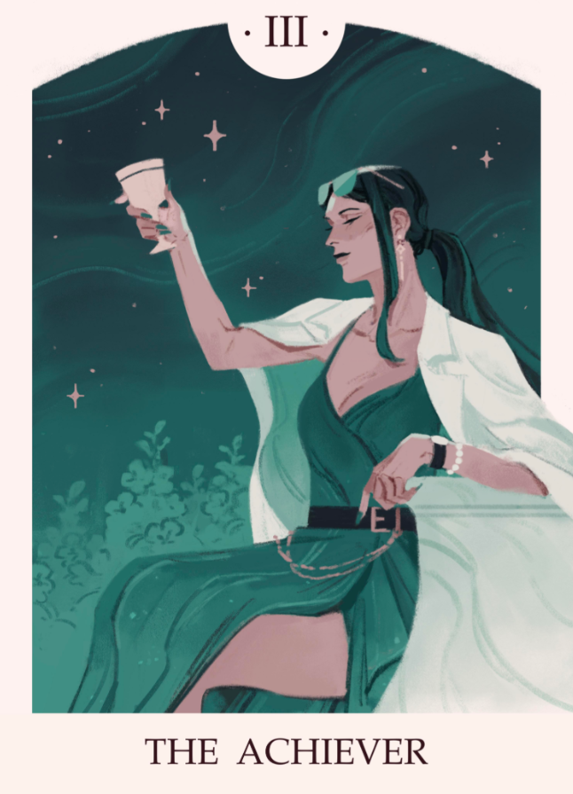
Adaptable · Excelling · Driven · Image-Conscious
Enneagram Type Three, or "The Achiever", is all about success and getting things done. They are hardworking, adaptable, and have a natural drive to be the best at whatever they do. Because they care a lot about their image and being seen as successful, they can sometimes turn into workaholics or focus more on their goals than their feelings. Still, they are great communicators who know how to connect with people to reach the finish line.
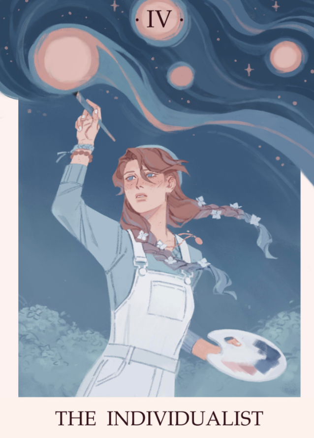
Expressive · Dramatic · Self-Absorbed · Temperamental
Enneagram Type Four, also called "The Individualist," is very creative and has a strong sense of who they are. They love to express themselves and often think ahead of the curve. Even so, because they focus so much on their own feelings and identity, they can sometimes be moody or a bit self-centered.
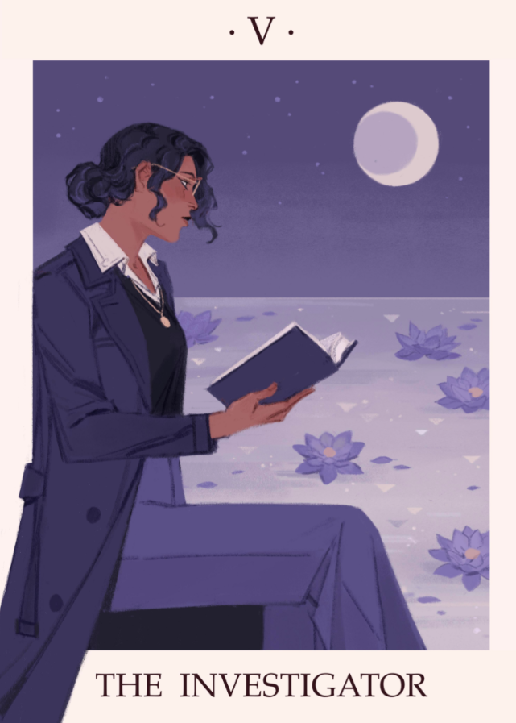
Perceptive · Innovative · Secretive · Isolated
"The Investigator," is very smart and likes to think deeply about how things work. They are quiet, logical, and notice things that others might miss. Still, because they prefer to stay objective and thoughtful, they can sometimes seem a bit cold or detached from their feelings.
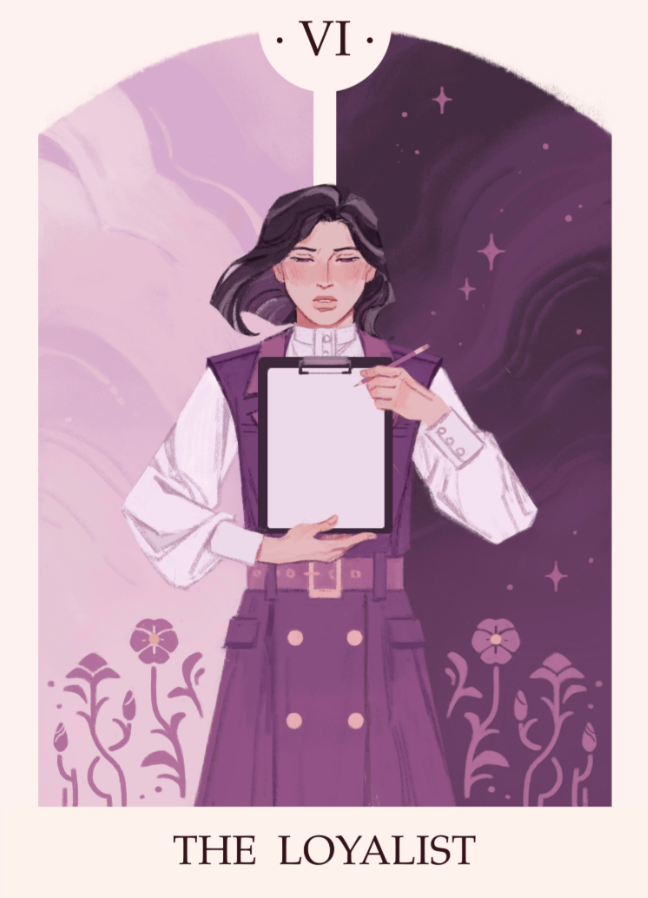
Engaging · Responsible · Anxious · Suspicious
Enneagram Type Six, often called "The Loyalist," is a very responsible person who stays committed to the people and groups they care about. They are the kind of friends who build long-lasting relationships because they are so trustworthy and devoted to those they love. You can always count on them to be there when things get tough. However, because they want to feel safe and prepared, they tend to worry quite a bit and often dwell on the negative.
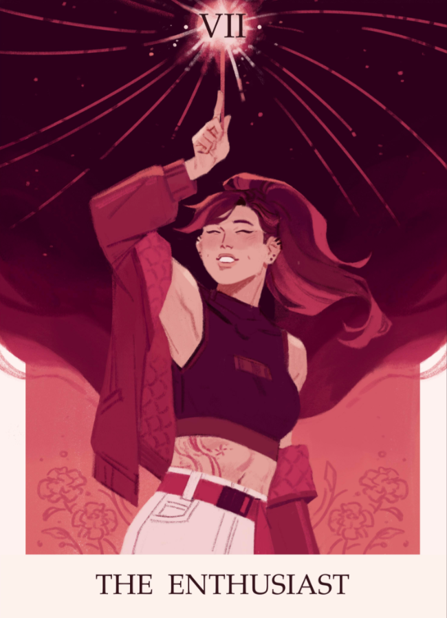
Spontaneous · Versatile · Acquisitive · Scattered
Enneagram Type Seven, or "The Enthusiast," is full of energy and loves to have fun. They are very social people who enjoy meeting new friends and are always ready for a new adventure. Because they think fast and can do many different things, they usually keep a positive attitude even when life gets tough. However, they can get distracted easily and find it hard to stay focused on just one thing because they are always looking for the next exciting plan.
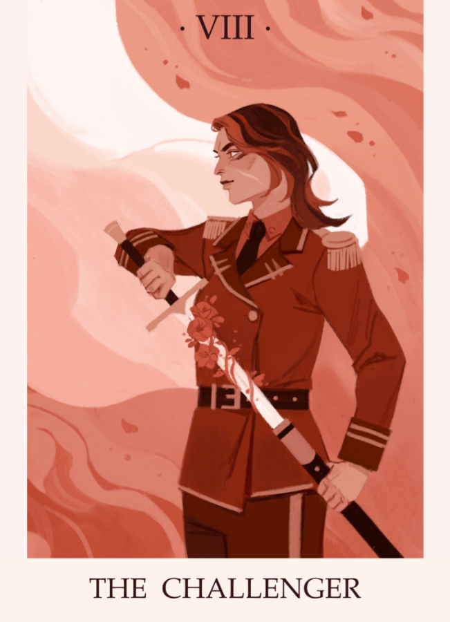
Self-Confident · Decisive · Willful · Confrontational
Enneagram Type Eight, often called "The Challenger," is a bold and strong person who is not afraid to say what they think. They are very sure of themselves and good at making fast choices, which helps them become great leaders. Because they love to take action and stay in control, they usually get things done quickly. Since they are so powerful and direct, other people might sometimes see them as bossy or a bit too aggressive.
Receptive · Reassuring · Complacent · Resigned
Enneagram Type Nine, known as "The Peacemaker," is very agreeable and easy-going. They are the kind of people who love to bring everyone together and promote harmony in groups. Because they dislike disagreements so much, they will do almost anything to avoid a fight. However, because they focus so much on keeping things calm, they may ignore their own wants and needs just to make sure everyone else is happy.
Real people, real types — see who shares your personality.
The Reformer — Mature beyond her years, Millie channels focus, discipline, and high standards into her craft. Her strong sense of right and wrong shapes both her art and her advocacy.
The Helper — Gracious, empathetic, and attuned to others’ emotions, Anne radiates warmth and sincerity. Her compassion drives her artistry, blending heart, depth, and genuine care in everything she does.
The Achiever — Poised, purposeful, and fiercely self-driven, Taylor embodies evolution in motion. Her artistry and ambition go hand in hand, turning reinvention into both a strategy and a story.
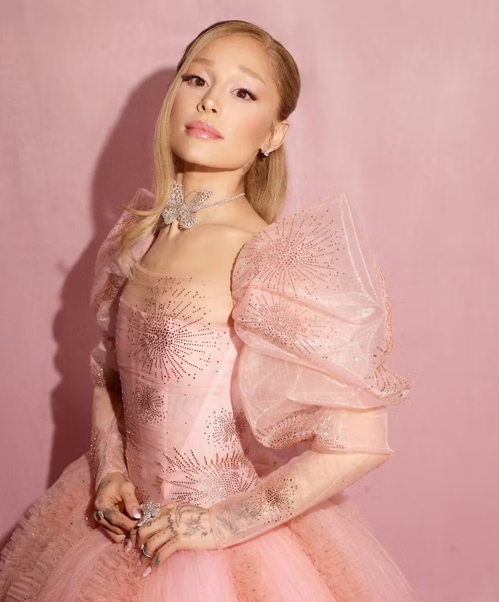
The Individualist — Expressive and deeply emotional, Ariana pours her inner world into her art. Her sensitivity and intensity reveal a soul that feels deeply and transforms pain into beauty.
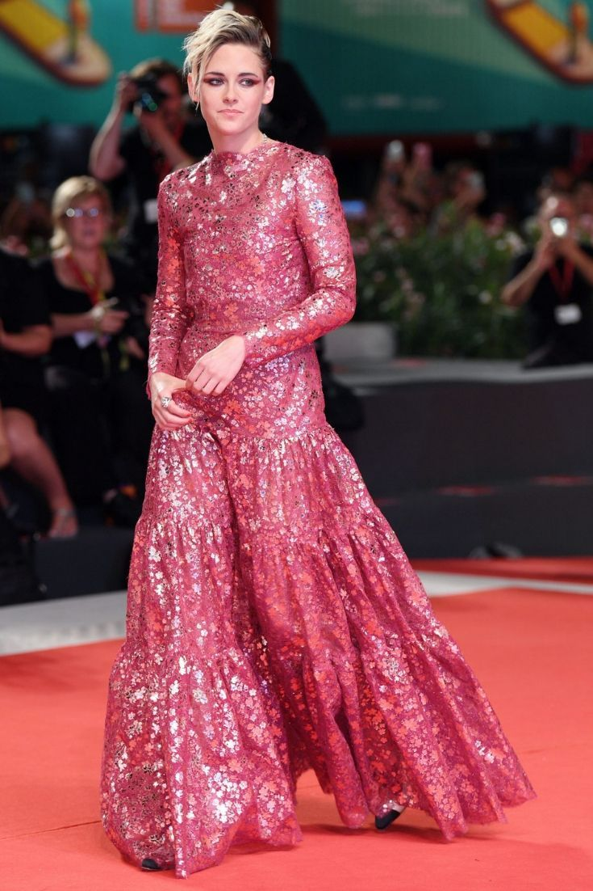
The investigator — Reserved, cerebral, and introspective, Kristen moves through life with quiet depth. Her minimalist expression masks a mind constantly observing and deconstructing.
The Loyalist — Genuine, responsible, and emotionally grounded, Kristen radiates warmth with a touch of caution. Her honesty and humor reflect the 6’s instinct to bring safety through connection.
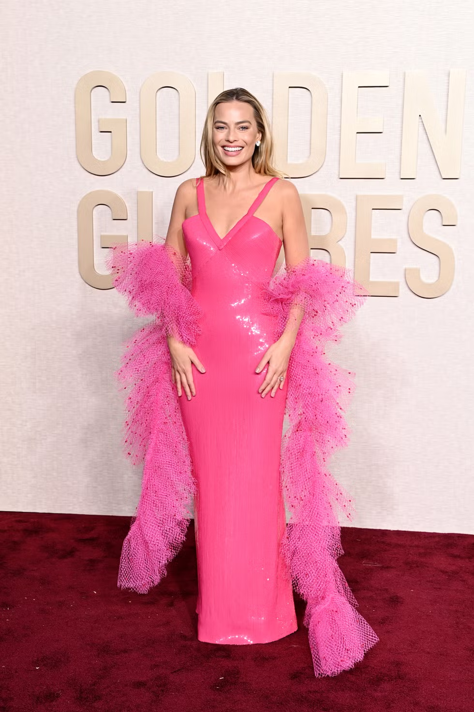
The Enthusiast — Energetic, spontaneous, and always taking on exciting new creative challenges.
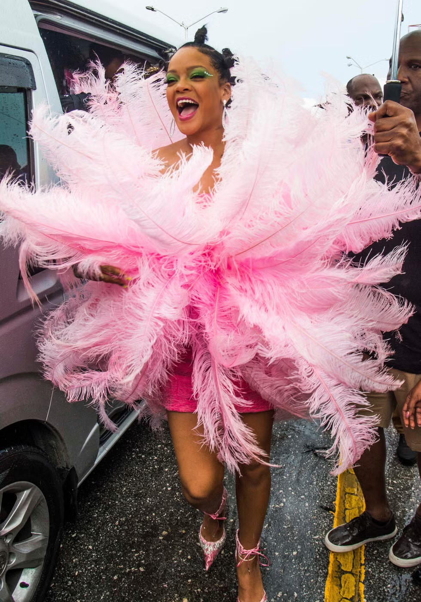
The Challenger — Bold, direct, and fiercely independent, Rihanna built an empire on her own terms.
The Peacemaker — Highly adaptable and driven, Zendaya has excelled across acting, fashion, and music with grace.